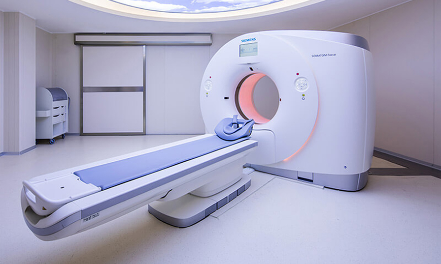

顶级设备
双源Force CT
全球顶级医疗机构首选，西门子独有双源结构设计，可用于全身各系统高清检查，尤其在心脑血管
系统疾病的筛查上优势巨大，在无创的情况下可清晰显示血管腔的狭窄，血管壁的斑块性质及先天
性变异。

-超快的成像速度
1 秒全身多器官成像 ，传统 CT 心脏检查需要服用相关药物并等待 1 小时心率受到控制后再进行
检查，本机无需等待。
-辐射低
一张胸片的辐射剂量即可完成全肺筛查，比坐一次长途飞机的辐射还要低。（参考：坐一次飞机长
途旅行辐射的剂量相当于拍 2-3 次胸片）
-智能分析
不但能检查出病灶位置，还具有无创分析病灶成分的功能，例如：检查心肌是否缺血，心脏钙化成
分显示，肿瘤活性成分显示，痛风检测及成分显示等。